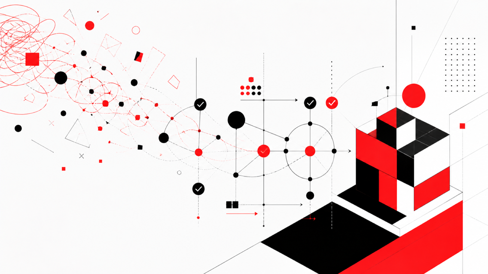

MENU COPILOT · 0→1 × PHASE III
把一个想法，
跑成一条流水线
Menu Copilot 从 0→1
以及三人团队如何走向 Agent—Human—Agent
OPC 内部分享 · 2026.08

OPC · AI-native 产品实践
01
先讲一个反直觉的结论
01 / REALITY
0→1 真正难的，
不是把页面做出来
而是把方向、数据、体验、工程和商业边界，
持续压到同一个可验证闭环里。
OPC · AI-native 产品实践
02
起点 · 资源少，问题必须选得准
3人左右
不是卖惨。
它让我们无法用人力掩盖错误方向。
01小场景输入明确，几分钟看到结果
02强痛点商家一眼能判断值不值得改
03可闭环诊断、确认、发布与回滚能连起来
所以，第一款产品选择了菜单真实 · 高频 · 可见 · 可行动
OPC · AI-native 产品实践
03
证据 · 69 家门店 / 2,564 道菜 / 409 个分类
样本把“感觉有问题”，
变成了可以讨论的事实。
44.3%
缺图或默认图
1,135 道菜27.6%
缺少描述
708 道菜7.4%
同店重复名称
190 道菜样本口径另有 14.2% 的分类仅含 1 道菜。样本后 50 店按“至少一张真实图片”筛选，不能外推为巴西市场总体比例。
04
时间线 · 2026.07.20—08.12
24 天不是“做完一版”，
而是连续完成三次收敛。
每次收敛都保留四条底线真实输入 · 可解释建议 · 人工确认 · 可审计与回滚
OPC · AI-native 产品实践
05
产品定义 · 用户只关心结果和风险
商家不是来“使用 AI”，
而是来完成一次安全动作。
01最值得先改什么？02建议符合真实菜品吗？03改错了能不能撤回？
看见真实菜单问题
→
理解证据与优先级
→
确认逐字段选择
→
生效发布、核对、重试
→
观察保留、复用、回滚
“生成完成” 永远不等于 “商家已采纳”
OPC · AI-native 产品实践
06
产品运行时 · 先把能力和责任分开
产品本身，已经是一条受控的
Agent—Human—Agent 流水线。
01菜单快照真实输入
→
02规则引擎确定性事实
→
03优化 Agent候选与置信度
→
04ChangeSetbefore / after
→
05商家确认责任闸门
→
06Apply Service审计 / 回滚
Agent 不直接写线上：生成与生效必须分开。
确定性发布权限校验幂等与重试发布后回读逐项审计失败可回滚
OPC · AI-native 产品实践
07
组织演进 · 个人速度不等于系统吞吐
真正的升级，不是多一个 Copilot，
而是改变交接界面。
OPC · AI-native 产品实践
08
PHASE III · V3.0
Agent 接力，
人类在四个责任点放行。
PM
Agent需求草案
→
Agent需求草案
人类 PM业务边界
→
Design
Agent界面方案
→
Agent界面方案
人类 Design审美规范
→
Dev
Agent实现与构建
→
Agent实现与构建
人类 Dev架构 CR
→
QA
Agent测试与 Eval
→
Agent测试与 Eval
人类 QA质量放行
→
Release证据归档
自动流转的是工件，不是责任。
OPC · AI-native 产品实践
09
交接契约 · 让下一环节不再重新理解
自动流转的是工件，
专业责任仍由人承担。
01Req Schema目标、范围、边界、验收标准
→
02UI + Design Tokens页面状态、交互、文案和视觉规范
→
03PR + Build代码、变更说明、可访问预览
→
04Test + Eval用例、自动评测、失败与回归证据
→
05Release Evidence部署、回读、观测、审计与回滚
业务边界审美规范架构质量质量放行线上责任
修改、驳回与失败不止是沟通结果，还要写回 Eval 与组织知识。
OPC · AI-native 产品实践
10
外部案例 · WhatsApp Bot 自动评测
局部自动化一旦闭环，
收益来自更快的学习。
旧模式≈ 7工作日
→
AI 自动评测1–2工作日
100%评测覆盖
旧模式抽样不足 5%
旧模式抽样不足 5%
13k每周样本沉淀
旧模式约 600 条
旧模式约 600 条
自动评测 → 人工复核 → 问题回流 → 下一轮方案
案例指标来自分享文档，用于说明组织杠杆，不代表 OPC 当前产出。
OPC · AI-native 产品实践
11
现状判断 · 从局部能力走向系统编排
OPC 已经站在 2.5→3.0 的门槛，
但还没有跑通整条线。
- 三人结果型协作
- ChangeSet 与人工确认
- 确定性发布与版本证据
- UI、埋点与知识资产
- 工件 Schema 与任务状态
- Agent 自动接力与驳回
- 自动 Eval 与统一审批入口
- 权限、审计和生产观测
- 平台依赖较低
- 输入输出清晰
- 测试基础较完整
- 闭环短，适合连续跑三轮
下一步不是再加一个 Copilot，而是选择一条新项目链路做系统级试点。
OPC · AI-native 产品实践
12
90 天试点 · 先证明可重复，再扩大覆盖
只做一件事：把一条新项目链路，
跑成可重复流水线。
试点原则新项目优先 3.0；高风险动作始终保留 Human Gate；无法证明更优就回退。
OPC · AI-native 产品实践
13
验收标准 · 衡量系统，不衡量热闹
Phase III 不看“用了多少 AI”，
只看吞吐、质量和风险。
70–80%目标场景进入 3.0
复杂历史场景可保留 2.5
复杂历史场景可保留 2.5
2×组织产出效率
重点监测 Cycle Time 与等待
重点监测 Cycle Time 与等待
100%高风险动作经过人工 Gate
审批、发布、回滚均可审计
审批、发布、回滚均可审计
Demo ≠ 产品真实数据、授权与交付成立
生成 ≠ 采纳用户确认、保留与复用成立
已推送 ≠ 已上线部署、可用与观测证据成立
以上百分比与倍数是 Phase III 目标参考，不是 OPC 已达成绩。
OPC · AI-native 产品实践
14
最后，带走一个行动
先跑通一条
Agent—Human—Agent
流水线。
方向与责任留给人 · 速度与重复执行交给 Agent
所有修改、失败和结果都写回系统
15